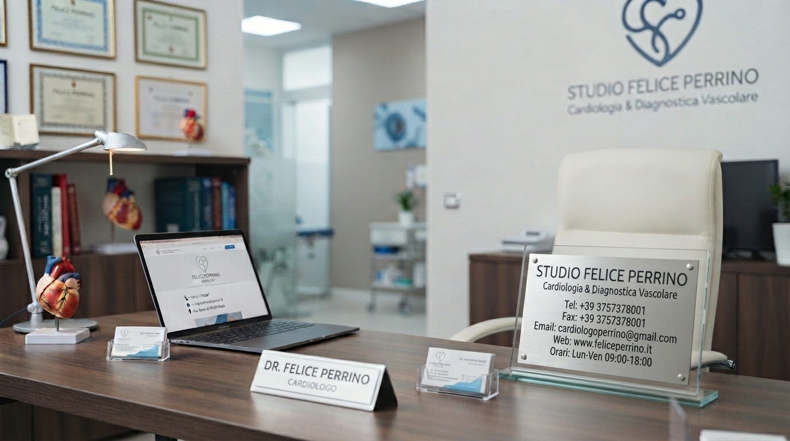

Contatti e prenotazioni
Inizia da una conversazione.
Il numero di telefono dello studio è attivo per eventuali prenotazioni o richieste.

FAQ - Domande frequenti
No, per le visite private non è necessaria l'impegnativa del medico curante. È sufficiente prenotare tramite il modulo o via email.
Eventuali esami cardiologici precedenti (ECG, ecocardiogrammi, referti), l'elenco dei farmaci assunti e, se disponibile, la tessera sanitaria.
In media 30-45 minuti, per lasciare spazio sia all'anamnesi sia a eventuali esami eseguiti in sede.
Scrivendo all'indirizzo email dello studio con almeno 24 ore di anticipo rispetto all'orario previsto.